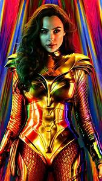

"Just because we're seeing more women, it doesn't mean they're talking more. The 'shut up and look good' is predominant because these super heroines have to please a male audience."
THE CREATION OF THE CHARACTER
The character of Wonder woman was created in 1941 which is quite early. Unfortunately, it was not until the late 70s that she had a program of her own called "Wonder Woman" and "The New Adventure of Wonder Woman". She was created by William Moulton Marston, who was inspired by his wife Elizabeth Holloway Marston and his companion Olive Byrne, to create this character known as feminist. He was also inspired by Margaret Sanger who was a women's rights activist and the founder of family planning in the United States. In addition to being a feminist character, it was announced that she was also bisexual, which seems rather logical since on the island where she is from, they live only between women without the presence of men, which strongly favors relationships between women.
HER BEGINNINGS AND HISTORY
The character of Wonder Woman made her debut in the All Star Comics issue 8 with the name Diana. Her story begins when a U.S. Army pilot crashes on Paradise Island. Diana takes him in on their island, which is made up of Amazons and led by Diana's mother, Queen Hippolyta. But it is not really her daughter because Diana was created from clay and then the gods gave her life.
FEMINIST CHARACTER
In Wonder Woman, 1984 Diana is a scientist and this fact can show a feminist representation of the film, because the professions more focused on the scientist are more "male" professions. We can notice that the character of Diana is very intelligent. Diana is also very athletic as we can see at the beginning of the film when she participates in a competition. Her strength is also shown when she saves Barbara while a man attacks her. Also in Wonder Woman 1984, Diana lives alone without the presence of a man which shows her emancipation and independence
FEMINIST CHARACTER ? NOT REALLY
In the movie, we can see that Barbara, another character of the movie Wonder Woman 1984 is appreciated by her colleagues when she is pretty and well well-dressed like Diana which is a little bit reductive for the image of the woman who is appreciated only for her appearance and her body. Also the outfit that Wonder Woman wears is very sexualizing. It is very short at the bottom and very tight, this is due to the fact that this character must appeal to a male audience. The only way to please would seem to be by being naked. The fact that in Wonder Woman 1984, she saves the world without fighting too much just by talking to the villain, shows a character that is too stereotypical with the fact that just by talking she can manage to save the world without needing to fight, it makes the image of the character looking weak. When she fights, it's only against the woman (Barbara) and when they go to try to stop the villain in the tank, but again she gets help from her lover, which shows that to get out of it she needs a male figure.
If you want to know more about feminism Click here